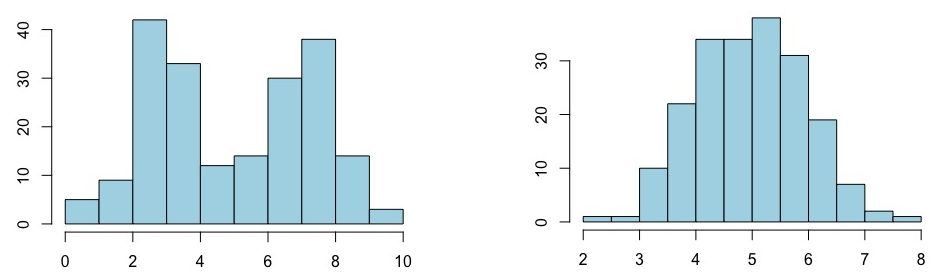

Capítulo 2 ¿Qué es (y no es) la estadística?
Faltan 17 segundos para que acabe el partido de baloncesto entre el Celta de Boston y el Real Sacramento. El Celta gana de dos puntos y va a sacar de banda. El Real Sacramento ha pedido tiempo muerto. Está claro que van a hacer una falta personal y esperar que el jugador del Celta falle al menos uno de los tiros. Ambos entrenadores están montando su estrategia en torno a esto: el del Celta, pensando en qué jugdores debe poner en cancha; el del Real Sacramento pensando a qué jugador conviene hacer la falta.
A efectos de este escrito, supongamos que no se han enfrentado nunca y no saben nada de partido anteriores. Entonces, la única evidencia que tienen, y en lo que basarán sus decisiones, es en el porcentaje de tiros libres encestados en este partido.
Hay dos jugadores del Celta con un porcentaje del 100%. Uno es L’Bron Jaume pero que sólo ha tirado uno y la ha encestado. El otro es Llorenç Ocell, que lleva 8 de 8. Claramente a Ocell no hay que tocarle, pero a Jaume… no está tan claro. Hay dos con un 0%. Uno es Sión Guillérmez, que ha fallado el único que ha tirado. El otro es Trae Joven, que lleva una serie de 0 de 5. Joven es el candidato número uno a recibir la falta, que es por lo que lo van a sentar. En cambio es difícil valorar la probabilidad de que Guillérmez falle sus tiros.
Hay dos que han encestado un 50%, Santi Mayordomo y Cristóbal Pablo. Pero Santi ha metido 1 de 2 mientras que Cristóbal ha metido 7 de 14. Es el mismo porcentaje, pero la intuición nos dice que mejor hacer falta a Cris que a Santi. Finalmente tenemos a Kevin Amor, que ha metido 7 de 9, para un porentaje de 78% y Juan Pared que ha metido 5 de 7, un 71%. Aunque es cierto que Amor tiene un porcentaje un 7% mayor que Pared, otra vez la intuición nos dice que no hay mucha diferencia entre ambos y que incluso puede ser que Pared sea mejor tirador que Amor. “¿A quién hacer falta?” se pregunta el entrenador del Real. “¿Cuál dejo en el banquillo?” se pregunta el del Celta.
Intuitivamente nos podemos hacer una idea de quién es peligroso tirando tiros libres y quién no. No nos parece que 1 de 1 y 8 de 8 sean lo mismo aunque nos dé el mismo porcentaje. Ni es lo mismo 0 de 1 que 0 de 5. Pero sólo son intuiciones.
La estadística es la rama del conocimiento que gestiona y cuantifica la incertidumbre. Es la que nos permite dar un fundamento riguroso a estas intuiciones que tenemos y nos permite diferenciar un 1 de 2 y un 7 de 14, aunque ambos sean el 50%.
Una cuestion importante que se ve en este ejemplo es que la estadística no es necesaria para valorar el pasado: para saber el porcentaje de tiros libres de los tiros ya lanzados sólo necesitamos la aritmética. La estadística se necesita cuando hemos de valorar lo desconocido, generalmente, el futuro. Pues también podemos usar la estadística para valorar hechos desconocidos en el pasado: ¿A qué velocidad iba el coche cuando chocó?
A menudo se usa mal el término “estadística”: es un error habitual en retransmisiones deportivas decir cosas como “La estadística dice que mide 1,84 m”. Eso no es una estadística, eso es un dato. Tambien es un dato que “Ha dado 13 pases de los cuales han llegado a su destino 8”. La estadística se nutre de estos datos, pero lo que es propiamente estadística son las inferencias a las que podemos llegar a partir de esos datos.
En nuestro ejemplo, los entrenadores quieren evaluar cuál es la probabilidad para cada jugador del Celta de que enceste los dos siguientes tiros libres. En un caso real partirían de muchos datos (porcentaje de tiros libres, porcentaje de tiros libres en el último cuarto, minutos jugados —un jugador cansado suele acertar menos—, etc) para realizar cálculos complejos y tener una tabla, normalmente antes de que empiece el partido, con la lista de jugadores a los que hacer falta y a los que no (o los jugadores que deben estar en el campo y los que no). Después añaden su intuición —quizá este jugador está muy fallón hoy, quizá este otro parece nervioso— para tomar sus decisiones. Porque ese es el uso principal de la estadística: ayudarnos en la toma de decisiones.
2.1 El proceso estadístico
Veamos de una manera simplificada y esquemática cuál es el proceso que se sigue para realizar un estudio estadístico. El primer paso es determinar cuál es nuestra población de interés. Aunque se le llame población, no son necesariamente personas. Pueden serlo, pero también pueden ser objetos, por ejemplo los ordenadores fabricados por una fábrica, o pueden ser entes, por ejemplo días en los que puede llover o no, o tiradas de dado (no el dado en sí, sino el resultado obtenido tras tirarlo). Esta población puede ser finita o potencialmente infinita: todos los españoles con facultad de votar en unas elecciones determinadas es una población finita, mientras que todas las tiradas posibles de una determinada moneda es una población potencialmente infinita. De esta población quiero saber alguna característica: la altura media de los jóvenes españoles actuales, el porcentaje de caras del lanzamiento de una moneda, el porcentaje de días de lluvia en una ciudad, el consumo medio de un modelo de coche. Por algún motivo me es imposible medir la característica en todos los miembros de la población. Puede ser una cuestión de coste: es teóricamente posible, pero de un coste inasumible, medir la altura de todos los jóvenes españoles actuales o medir el consumo de todos los coches de un modelo. Otras veces es literalmente imposible: no puedo saber si va a llover o no mañana, dentro de una semana o dentro de un més, como tampoco puedo saber el resultado de los lanzamientos futuros de una moneda.
Lo que hacemos es coger una muestra representativa de la población y medir la característica en esa muestra. La estadística nos va a permitir decir algo de la característica en la población total, incluyendo aquellos que no hemos medido, a partir de lo que hemos medido en nuestra muestra. Naturalmente, no vamos a tener certeza total de lo que pasa en toda la población, pero la estadística nos permitirá acotar nuestra incertidumbre.
En muy pocos casos coger una muestra es fácil. Sí lo es en lanzamientos de monedas y casos así, pero poco más. En general, coger una muestra representativa es muy difícil. Es donde se va la mayor parte del coste de las encuestas o del control de calidad. No vamos a hablar más de ello en esta introducción, pero la mayor parte de los errores de los procesos estadísticos vienen de escoger muestras no representativas, llamadas sesgadas, que no representan a la población.
Población y muestra en nuestro ejemplo. En nuestro ejemplo la población no son los jugadores del Celta, sino los tiros libres de cada jugador. Una manera de ver que los jugadores no son la población, es que no hay incertidumbre alguna: son los que están allí. En cambio sí que hay incertidumbre en su capacidad de meter los próximos tiros libres. La población, para cada jugador, son todos los tiros libres que va a tirar en partido oficial. La muestra son todos los tiros libres que ha tirado en este partido hasta el momento. ¿Es una muestra representativa? Hay razonamientos tanto a favor como en contra.
Una vez tenemos la muestra y hemos medido la característica que nos interesa en todos los elementos de la muestra el siguiente paso es obtener una visión global de todos estos datos individuales. Esta parte de la estadística se le conoce como estadística descriptiva. Podemos obtener algunos valores importantes, como la media y la mediana, pero sobre todo es útil usar buenas gráficas.
Fijémonos en los dos histogramas de la figura siguiente.

Estos dos histogramas representan el peso de dos poblaciones de animales. La media en ambos casos es la misma, 4.97 gr, pero vemos que las naturalezas de las dos poblaciones son claramente diferentes. El de la derecha es una población homogénea, mientras que en el de la izquierda vemos que probablemente haya dos subpoblaciones con pesos diferentes, uno más ligero centrado alrededor de los 3 gramos y otro más pesado centrado alrededor de los 7. Un estadístico sabe que hablar de una media en el caso de la derecha tiene sentido; en el caso de la izquierda, no tanto. El conocido chiste “Un estadístico es el que, si tienes tu cabeza en un horno y los pies en el congelador, te dice que de media estás bien” es completamente erróneo. El estadístico es precisamente el que te dice que en este caso no tiene mucho sentido calcular una media.
Una vez tenemos una idea global de nuestros datos, podemos pasar a deducir conocimiento a partir de nuestros datos. Esta parte de la estadística se le conoce como estadística inferencial. Según el tipo de datos se le hacen unas pruebas estadísticas u otras. Estas pruebas nos van a permitir determinar si hay una correlación entre una variable y otra (¿Se fallan más tiros libres cuántos más minutos hayas jugado? ¿El porcentaje de tiros libre es el mismo en todos los cuartos?) o si se puede diferenciar entre dos casos (¿Es el porcentaje de acierto de Kevin Amor mayor que el de Juan Pared? —nos referimos a la población entera, todos los tiros libres de la temporada: en la muestra sí sabemos qué porcentaje es mayor—.
Los razonamientos que salen de las pruebas estadísticas son particulares a la estadística y cuesta entenderlos y acostumbrarse a ellos. Nos gustaría un claro sí/no, pero la estadística no elimina la incertidumbre, sólo la gestiona y cuantifica. Lo más que vamos a obtener son afirmaciones del estilo “La evidencia que tenemos da soporte a la afirmación de que el porcentaje de tiro de Amor es mayor que el de Pared”. Simplemente da soporte, no asegura. Y para saber cuánto soporte da usamos unas probabilidades aún más particulares a la estadística y más difíciles de entender.
Otra cuestión importante a tener en cuenta es que de la estadística, por su naturaleza, nunca, nunca, nunca se puede deducir causalidad. Por ejemplo, un estudio estadístico mostró que hay una clara correlación entre los libros que se tiene en una casa y la nota de selectividad de los habitantes de esa casa. Pero es obvio que no son los libros los que causan la mejora de la nota, pues si así fuera, bastaría con comprar unas cuantas cajas de libros el día anterior al examen (y devolverlos el día después) para mejorar la nota de selectividad. Absurdo.
Pero el procedimiento para determinar la correlación entre libros y nota de selectividad es exactamente el mismo que para determinar si un medicamento causa la cura de una enfermedad. La estadística puede indicar que hay una correlación, incluso cuantificarla de alguna manera, pero si la eliminación de la enfermedad es causada por el medicamento se debe determinar por métodos médicos: metabólicos, bioquímicos, patológicos… Las pruebas estadísticas no pueden determinar si hay causa o no.
Este es un peligro contra el que hay que estar alerta siempre. Si nos dicen que las personas con ojos azules son más altas que los de ojos marrones no pensamos que el color de los ojos cause alguna diferencia de altura, pero si nos dicen que las personas que siguen una dieta mediterránea son más delgadas que los que siguen otras dietas, inmediatamente pensamos que quizá convenga cambiar nuestra dieta. No estoy diciendo que la dieta no influye en nuestro peso —evidentemente sí lo hace— y tampoco estoy diciendo que la dieta mediterránea no cause una disminución de peso —quizá sí lo haga—. Lo que estoy diciendo es que el razonamiento estadístico no permite llegar a esa conclusión.
2.2 ¿Es la estadística parte de las matemáticas?
Normalmente se suele considerar que la estadística es parte de las matemáticas, aunque hay voces ––entre las que me incluyo–– que lo discuten. Un razonamiento que se suele dar es que la estadística usa fuertemente de las matemáticas. Pero la física también usa fuertemente de las matemáticas y en el S. XVI el término “matemáticas” era un sinónimo de “astronomía”, pero ahora nadie opina que la física es parte de las matemáticas. Exploremos la diferencia entre física y matemáticas para ver cómo la estadística no es matemáticas.
El proceso matemático parte de axiomas y llega a teoremas. La física, en cambio, parte de observaciones y llega a las leyes físicas que describen con precisión el mundo material. La física utiliza ecuaciones diferenciales y matrices y tensores, elementos matemáticos, pero su proceso de creación de conocimiento es completamente diferente al de las matemáticas.
La estadística parte de datos y llega a conclusiones probabilísticas. La parte fundamental, y la más difícil, es la recogida de los datos, el muestreo, que es la parte más alejada a las matemáticas de todo el proceso. El segundo paso, la estadistica descriptiva, depende mucho de la percepción que se tiene ante gráficas y eso es más cercano a la psicología que a las matemáticas. La práctica estadística usa fuertemente de las matemáticas, sobre todo en la parte inferencial, pero no es matemáticas.
Quizá la confusión viene de que sí que hay una parte de las matemáticas que recibe el nombre de estadística, en donde, partiendo de axiomas se llegan a los teoremas que usamos en la práctica estadística. Son dos campos que reciben el mismo nombre, pero no se refieren a lo mismo.
La estadística es un campo de conocimiento propio, con sus procedimientos y sus razonamientos, que usa de las matemáticas. Pero el procedimiento estadístico no es el procedimiento matemático y el razonamiento estadístico no es el razonamiento matemático. La estadística es una campo propio.